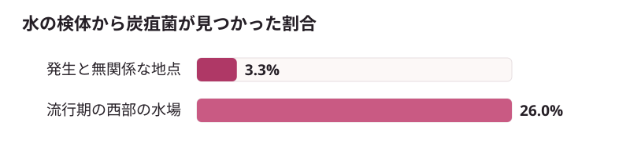
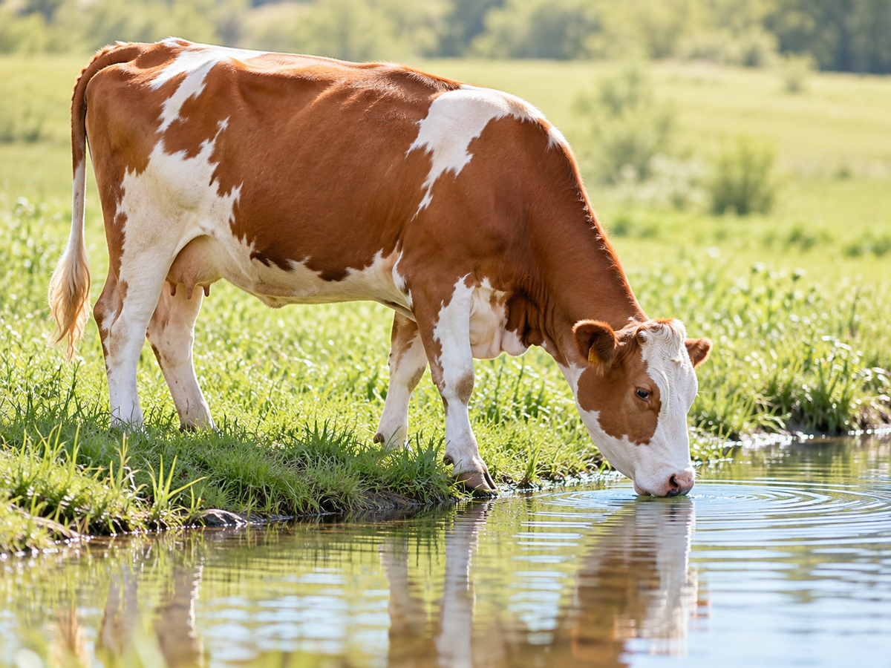
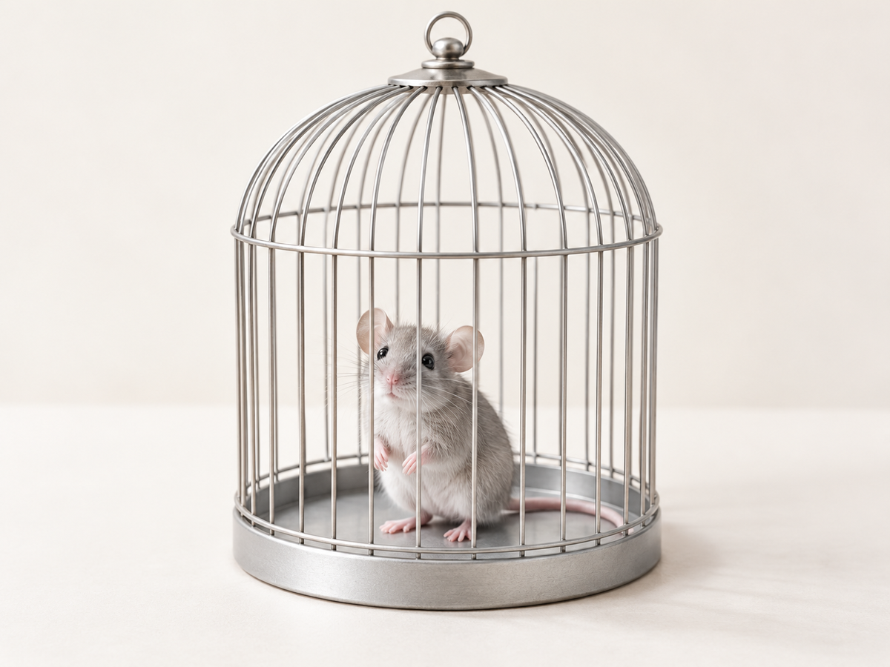
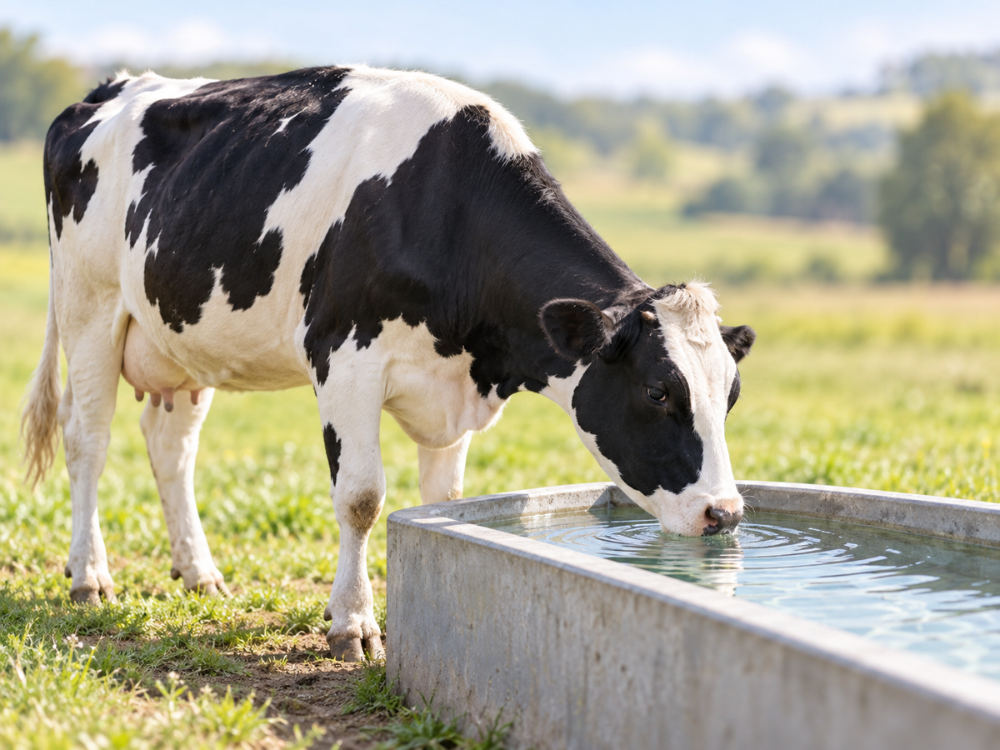
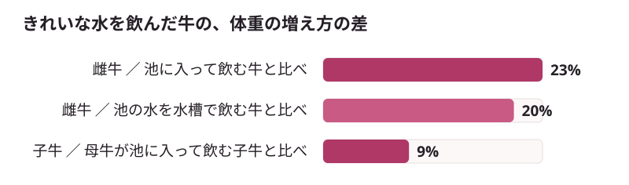
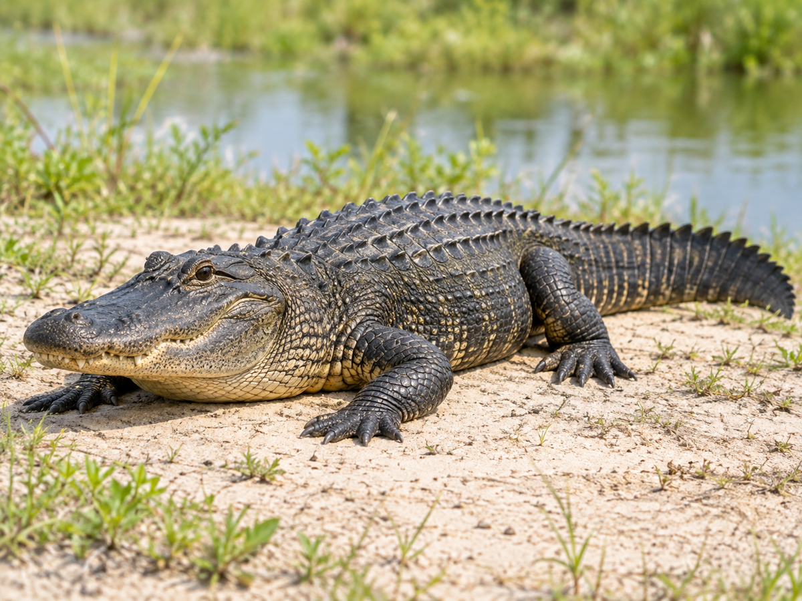
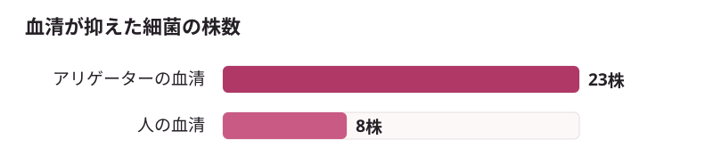
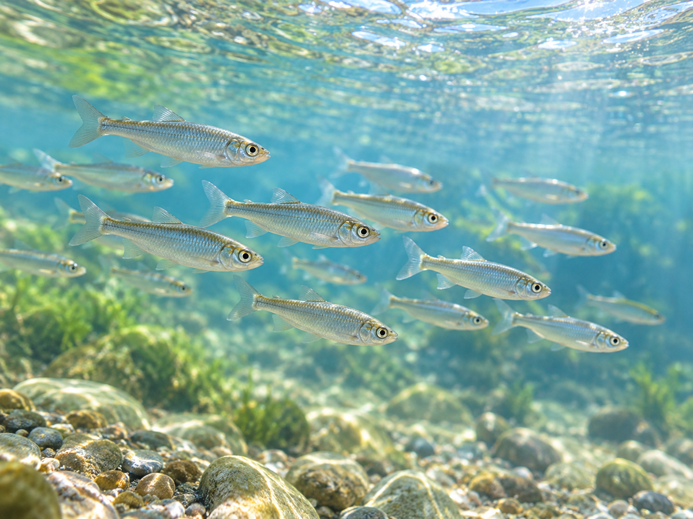
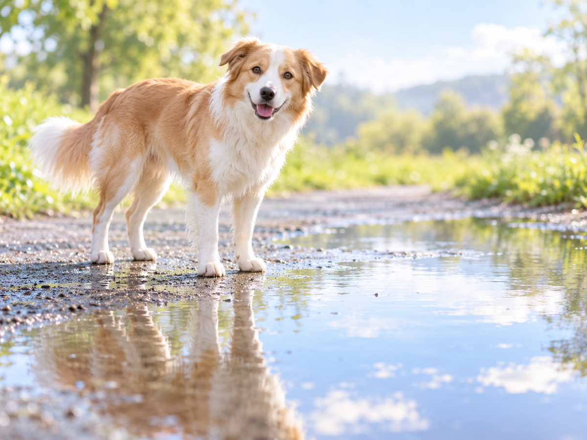

A PAGE FROM THE NOTEBOOK
【なぜ？】動物は汚い水を飲める？胃酸・免疫・水選びの守りと限界
#動物#水質#感染症#胃酸#免疫IN THIS NOTE
この記事でわかること
「平気そう」に見えるだけの理由
「野生動物は泥水を飲んでも平気」という印象は、実際に調べた記録と食い違います。ナミビアのエトーシャ国立公園の調査（1994年発表）では、炭疽の発生と関係のない23地点の水を調べたところ、炭疽菌が見つかったのは92検体の3.3%でした。ところが、ゾウで炭疽が流行していた時期の公園西部の水場では、73検体の26.0%から菌が見つかりました。水場は、時期や場所によっては病原体のたまり場になります。

目立つ例が、2020年にボツワナで少なくとも350頭のゾウが死んだ件です。2024年12月の報道によると、キングス・カレッジ・ロンドンなどのチームは、衛星画像や空からの調査をもとに、藍藻が増えた様子のある約20か所の水場と、ゾウが死んだ場所との関係を分析しました。ゾウは水を飲んだあと平均16.5km歩き、約88時間後に死んだと推定されています。ボツワナ政府は藍藻毒による中毒を原因としており、藍藻毒による水の汚染が有力な原因と考えられています。ただし、約20か所のどの水場でも毒が直接測られたわけではありません。
それでも動物が「平気そう」に見える理由として、確認された事実が一つ、研究者が指摘した可能性が一つあります。確認された事実は、病原体を持っていても症状が出ない動物がいることです。米CDC（2026年2月更新）によると、レプトスピラ菌に感染した動物には症状が出ないものもいて、見た目は元気なまま、何か月から何年も尿で菌を出し続けることがあります。もう一つの可能性は、死んだ動物が見落とされることです。ボツワナの件では、死体を食べる動物がすぐに片づけたため、小さな動物の被害が見落とされたかもしれないと報じられています。なおエトーシャでは、炭疽で死んだ動物の近くで集めたハゲワシ、ジャッカル、ハイエナのふんの半分以上から炭疽菌が出ました。死体を食べる動物が菌を運んでいる可能性を示す結果です。
ただし限界もあります。ボツワナの件は、コロナ禍で組織のサンプルを取れず、藍藻の毒そのものは確認されていません。衛星からは毒を検出できないため、証拠は間接的です。エトーシャの数字も1990年代の、一つの公園での調査です。「動物も水で病気になる」とは言えます。しかし、野生動物が水からどれくらい病気になっているかという全体の数は、今回読んだ資料からは分かりませんでした。
胃酸の関所と、免疫の慣れという仮説
体の守りとしてまず挙がるのが胃酸です。2015年にPLOS ONEに載ったBeasleyらの総説は、哺乳類と鳥の胃の酸性度を文献から集めて比べました。そのうえで、胃は口から入った見慣れない微生物が腸に届く前にふるい落とす「関所」として働く、と提案しています。今回取得できた要約によると、死肉を食べる動物や肉食動物の胃は、草食動物や、昆虫・魚のような自分から遠い種類の獲物を食べる肉食動物より、はっきり酸性が強いという結果でした。

著者たちは、死肉や自分に近い種類の生き物を食べる動物ほど、強い関所、つまり強い酸が必要になると考えています。一方、草食動物は病原体に出会う危険が低いので、強い関所は必要ないと予想しています。つまり胃酸の強さは、水ではなく食べ物と結びつけて説明されています。種ごとの具体的なpHの値や、どの部屋を測ったかは、今回取得できた資料では確認できませんでした。動画で数値を出す場合は、原著で確かめる必要があります。
二つ目によく挙げられるのが免疫です。2016年にミネソタ大学のチームがNatureに発表した研究の紹介記事によると、納屋でつかまえたネズミやペットショップのネズミは、免疫細胞の種類や体内での分布が大人の人間に近い姿でした。一方、清潔な環境の実験用ネズミは新生児に近い姿でした。実験用ネズミを汚れたネズミと同じかごで飼うと、大人に近い姿に変わりました。ただし、この紹介記事には、水からの感染を防ぐ効果を調べた結果は示されていません。そのため「慣れた免疫が汚い水から守っている」は、確かめられていない仮説として扱います。

胃酸の関所にも限界があります。要約によると、同じ種の中でも、年をとったり肥満の手術を受けたりして胃の酸性度が変わると、腸の病原菌や細菌の顔ぶれが変わりました。関所の強さは一定ではないということです。さらにCDCによると、レプトスピラ菌は、汚れた水や土に触れることでも、汚れた飲み物や食べ物を口にすることでも感染します。胃という関所だけで、水に関わる感染をすべて説明することはできません。
汚い水を避け、井戸を掘る行動
三つ目は行動です。カナダの研究チームが2002年に発表したウシの実験では、きれいな水も選べる場合、新鮮なふんが重さで0.005%混ざっただけの水をウシは避けました。ごくわずかな汚れでも、飲む水を選び分けていたことになります。ただ、この論文の要約からは、ウシが何を手がかりに見分けたのか（においか味か）は分かりません。

水の質と体重の増え方の関係も調べられています。きれいな水を飲んだ1歳前後の雌牛は、池に直接入って飲んだ雌牛より23%多く体重が増えました（P=0.045）。池の水を水槽に引いて飲んだ雌牛との差は20%でしたが、P=0.076でした。子牛では、母牛がきれいな水を飲んだ群は、母牛が池に直接入って飲んだ群より9%多く増えました（P<0.10）。一般に目安とされるP<0.05を満たしたのは23%の差だけです。20%と9%の差は、統計的な裏づけが弱い結果です。母牛自身の体重と背中の脂肪の厚さには差がありませんでした。これは家畜のウシの増体についての結果で、健康全般や野生動物にそのまま当てはまるかは、この研究からは言えません。

ゾウでは、掘った井戸の水が調べられています。サンディエゴ州立大学などのチームがナミビアのクネネ地方で2回の現地調査で調べたところ、ゾウが乾いた川の砂を掘り、その下の水を飲む井戸の水は、近くの表面の水や水たまりより、ふん由来の大腸菌群（汚れの目安になる菌）がはっきり少なくなっていました。人が作った井戸の水も、そこから水を引いた水場よりずっと菌が少なく、ゾウがポンプや配管を壊そうとすることの説明になる、と記事は述べています。研究者は、こうした菌はふつう命に関わるものではないが、ゾウの免疫を弱めうると話しています。ゾウが何のために掘るのかや、健康にどんな効果があるのかは、研究者の解釈です。直接確かめられたわけではありません。
タンザニアのルアハ川では、2011〜2013年の乾季に、ゾウ、シマウマ、イボイノシシ、ヒヒが流れが止まった川の砂地を掘って水場を作る様子が記録されました。流れが止まって残った水たまりは、細菌とふんでひどく汚れていました。研究者は、掘ることで感染の危険を下げられるのではないかと考えています。ただ、この発表には、掘った穴の水と水たまりの菌の数を直接比べた結果は載っていません。行動による守りで確認されているのは、「汚れた水を避ける」ことと「掘った井戸では汚れの目安の菌が少ない」ことまでです。
水の中の生き物は大丈夫か
水の中で暮らす生き物はどうでしょうか。ワニの仲間のアメリカアリゲーターは、細菌の多い沼にすみ、なわばり争いで傷を負っても、命に関わる感染はまれだと報じられています。2008年に米国化学会の大会で発表された研究では、アリゲーターの血清（血が固まったあとに残る液）は試した23株の細菌をすべて抑え、人の血清で抑えられたのは8株でした。ただし、これは試験管の中の結果です。汚れた水を飲んだり傷口が汚れた水にふれたりしても平気かを、直接調べたものではありません。


魚は、汚れた水で病気になりやすくなります。1993年のFAOの資料によると、水が有機物で汚れ、水に溶けた酸素が減ると、細菌が増えやすい環境になります。皮膚やひれ、えらを守る粘液の層が傷つくことが、多くの病気の流行の前提になります。表流水の汚れと、魚の細菌の病気（せっそう病）の流行との関係はよく知られています。水の中の生き物も、汚れた水の害を受けないわけではありません。

人やペットに当てはめる前に
「動物が飲めるなら人も平気」と考えるのは危険です。食品安全の解説記事（2017年）は、この総説について、人の胃酸の強さはハゲワシのような死肉を食べる動物に近かったと紹介しています。ただしこれは紹介記事の書き方で、今回、具体的な数値は確認できませんでした。それに総説の要約によると、年をとると胃の酸性度が変わり、腸の病原菌の顔ぶれも変わります。胃の関所の強さは、同じ人間でも一定ではありません。
ペットの犬も例外ではありません。CDCによると、レプトスピラ症は感染した動物の尿で汚れた水や土から広がり、特に洪水や大雨のあとに多くなります。菌は水や土の中で何週間から何か月も生き残り、犬や猫も菌を持ちうる動物に含まれています。症状のない動物が尿で菌を出し続けることもあるため、見た目がきれいな水たまりでも安全とは限りません。

「野生動物は免疫が慣れているから平気で、人やペットは慣れていないから危ない」という説明は分かりやすいものです。しかし、今回の資料では確かめられませんでした。汚れたネズミの研究の紹介記事が示しているのは、育つ環境で免疫の姿が変わることまでです。水からの感染を防ぐ効果を調べた結果は示されていません。確実に言えるのは、野生動物も炭疽菌の見つかる水場を使っていること、そして藍藻毒が疑われる大量死が起きたことです。
今回の資料の範囲では、動物が汚い水を飲めるのは、病気をすべて防げているからではありません。被害を受けながら、汚れの少ない水を選んだり掘ったりして危険を減らしているとみるのが妥当です。ただし、野生動物が水からどれくらいの割合で病気になっているかを全体で示した資料は見つかりませんでした。動画では、この点を「分かっていないこと」として扱うのが安全です。
結論
動物も汚い水で病気になる。胃酸の関所や、水を選ぶ・掘る行動が危険を減らすとみられるが、水場の炭疽菌や藍藻毒が疑われる大量死もある。免疫の慣れが水に効くかは未確認。
見解
確認できた事実は次のとおりです。水場から炭疽菌が見つかり、ボツワナのゾウの大量死では藍藻毒が有力な原因とされています。ウシはわずかなふんが混ざった水を避け、ゾウが掘った井戸は表面の水より汚れの目安の菌が少なくなっていました。総説の要約では、死肉を食べる動物や肉食動物の胃は草食動物より酸性が強いとされます。ここからは私の推測です。動物は汚い水に強いというより、「なるべく汚い水を飲まない行動」と「飲んだあとの体の守り」を重ねて、損害を減らしているのだと思います。ただし、確認されているのは水を選ぶ行動と、井戸の菌の少なさまでです。それで感染が減るかは直接確かめられていません。免疫の慣れが水からの感染を防ぐかも、未確認の仮説です。症状の出ない保菌や、死体が見落とされる可能性を考えると、被害は実際より小さく見えているかもしれません。今後については、ボツワナの研究の主著者Davide Lomeoが、水温の急な上昇、栄養分の流れ込み、塩分が藍藻毒の発生に関わると述べています。また、コロラド州立大学のGeorge Wittemyerは、よどんだ水に頼る乾燥地では同じことが起きうると指摘しています。どちらも予測で、起きる頻度は分かっていません。